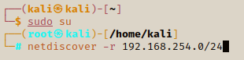

Enumerating With Nmap (Network Mapper)
Using the Kioptrix app, we will enumerate the IP address to try to gain root access of the machine.
By using ping on the Kioptrix machine, I mananaged to get the IP address of the machine: 192.168.254.130.
Now that we have the Kioptrix machine running, we need to determine where it is then we can do some scanning.
To do this we can use a tool called net discover. It used arp to detect all the machines on the network we provide.
We will get our IP adress by using ip a then do a netdiscover of the IP address.
netdiscover -r 192.168.254.0/24

-r is for range
Remember you will need to be in the root directory to use netdiscovery.
When you press enter you will get a list of all the machines on the network. We can fine the IP address for the Kioptrix machine.

This is like dowblechecking that the machine is valid in our network.
We can now use nmap to scan for any open ports and services on the Kioptrix address we now have.
We can do a stealth scan (-sS on the port) - however this will NOT make you completely hidden. If you come across a target with good security you'll get caught! However the tutor for the course has stated that he manages to evade visibility 80% of the time using nmap. Not everyone may have good security on their networks set up, but know that nmap's stealth scan is not completly hidden.
These are regarded as stealth becasue it does not complete the full 3-way handshake and resets the handshake on the final connection, making it an annonymous connection. As stated before, this will no longer leave you completely hidden.
Let's look at some of the nmap tags and what they mean.

- -T4 lets you choose the speed of the port scans between 1 - 5. 1 being very slow, and 4 being very fast. These can be changed to suite your situation. For challenegs like Vulnhub you won't ned to care about the speed.
- -p- is saying you want to access all ports; this will scan all 65,000+ ports for us. If we do not add this at all, nmap will scan for the top 1000 most common ports (like 80, 443, 139, 445, etc). We want to run a port scan on all ports just in case we are able to find a host on an uncommon port.
- -p 80,443,53 this also allows you ro scan for specific ports
- -A stands for everything. this tells nmap that we want all the fingerprint analysis of each port. This will give you information about the operating system, the version, etc.
- nmap --help is also a good way to get to know and understand all the different tags and how you can use them.
- -sn will allow you to do a ping scan which you could then do a ping sweep on a netwrok.
- -sU is UDP scan that also has 65,000+ ports. It is a connectionless protocol, so we don't want to go through all ports just the first 1000. This is going to take a very long time because of the connectionless protocol.
It is quicker to be selective on which ports you want to scan then do a -A scan on the port, instead of scanning all ports and doing a -A scan on each one.
You can even try to script this approach.
nmap -T4 -p- -A 192.168.254.130

Starts the scan on the Kioptrix machine
nmap results

From the results we can see that the Kioptrix machine has 6 ports open.
As a pen-tester it is our job to get the information from the ports and research for any vulnerablilties so we can use as an exploit.
- port 80 & 443 are websites
- port 139 is for file shares
REMEMBER !!
- Get used to the nmap syntax and the different tags you can use. You want to familiarise yourself with the common tags.